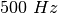

Transformateur de courant alternatif¶
Objectif
Démontrer l’induction mutuelle entre deux bobinages, fournis avec ExpEYES. Un des bobinages, le primaire, est connecté entre WD et GND. On aligne les axes des deux bobinages et on insère un noyau de ferrite.


Procédure
- Faire les connections comme montré sur la figure
- Activer A1 et A2
- Régler WG à 
- Approcher les bobinages l’un de l’autre et observer la tension en A2.
- Essayer d’insérer un noyau en ferrite
Discussion
Le signal appliqué et le signal induit sont présentés sur la figure. Un champ magnétique oscillant est la cause de la tension induite. Dans les deux expériences précédentes, le champ magnétique oscillant était créé par le mouvement d’aimants permanents. Dans le cas présent, il est créé par un courant variable dans le temps.
Essayer de faire cette expérience avec un signal carré. Connecter une
résistance de  aux bornes du bobinage secondaire pour réduire
les oscillation de résonance.
aux bornes du bobinage secondaire pour réduire
les oscillation de résonance.
Le concept de courant alternatif est introduit en affichant la tension en fonction du temps. On explore le comportement de dipôles tels que les condensateurs et les bobinages en courant continu et alternatif, en mesurant des paramètres tels que l’amplitude, la fréquence et la phase. La conversion de signaux électriques en son et l’inverse est démontré. Pour chaque expérience, on réalise les connexions selon le diagramme donné.